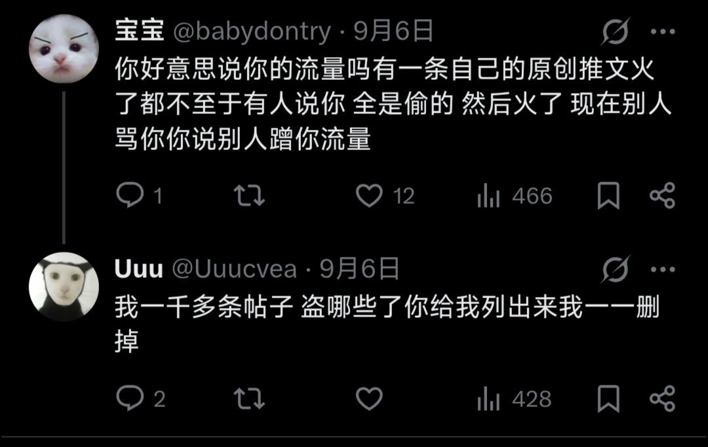
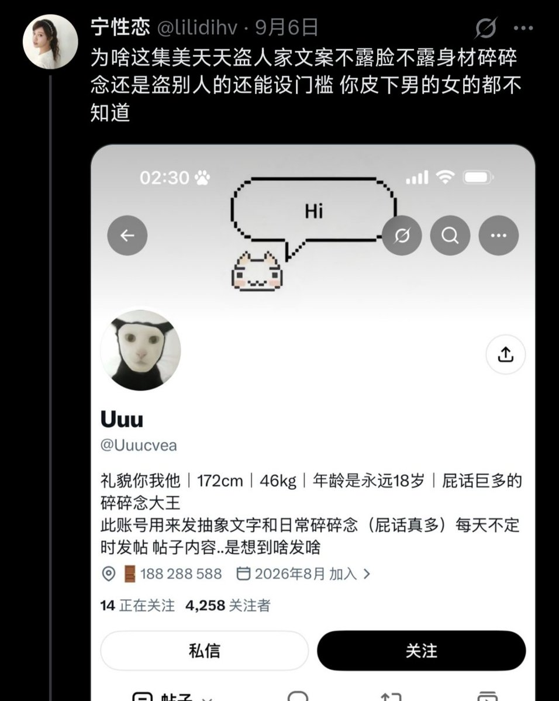

@liujiayi1111 温馨提示，挂ta不是因为ta偷文案，这里偷文案的一抓一大把。
此人的帖子全是偷的文案还挂好友收费门槛，（我也不知道加这种好友有什么用）被人指出偷文案还嘴硬不承认。现在基本都删掉了，偷的文案删了ta还能写出什么东西来🤣👉

此人的帖子全是偷的文案还挂好友收费门槛，（我也不知道加这种好友有什么用）被人指出偷文案还嘴硬不承认。现在基本都删掉了，偷的文案删了ta还能写出什么东西来🤣👉


我做了个半自动收集 @Uuucvea 抄袭帖子来源的工具，然后自动找出 Uuu 盗贴的来源，目前收集了有百来个盗贴的来源，顺便 vide code 了一个简易的网页展示，链接：https://t.co/YgyvkOMHK1
它说盗了哪些列出来它就一一删掉，不知道还算不算话🤭
我发现它盗的帖子多数都来自 Threads
它说盗了哪些列出来它就一一删掉，不知道还算不算话🤭
我发现它盗的帖子多数都来自 Threads